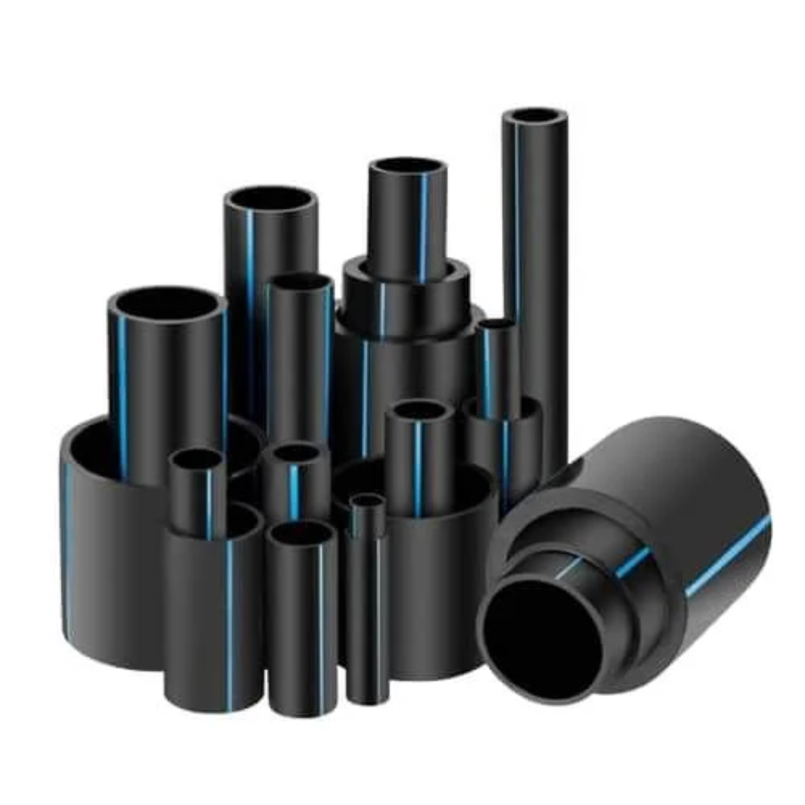

T-Flex
A flexible polyethylene piping system engineered for water supply infrastructure, designed to withstand demanding ground conditions.

Flexible piping for demanding ground conditions.
T-Flex is a flexible polyethylene piping system designed for water supply infrastructure. Its inherent flexibility and toughness allow installation in long coils, significantly reducing the number of joints and improving resistance to ground movement and vibration.
Where T-Flex can be used
- Main water supply infrastructure
- Areas prone to seismic activity or ground movement
- Long-distance water transmission
- Trenchless installation (where applicable)
Its flexibility makes it ideal for projects where rigid piping systems may be prone to failure.
Specifications & Product Range
Key technical characteristics and available dimensions of the T-Flex system.
| Material | Polyethylene PE-100 |
|---|---|
| Appearance | Black with blue stripes |
| Standards & Specifications | ISO 4427-2(E):2007, DIN 8074/8075 and PS 3580:1997 |
| Available Range | Diameters 20, 25, 32, 40, 50, 63, 75, 90, 110, 125, 160, 180, 200, 315, 355, 400, 450, 500, 560 and 630mm. Coils of 100m are available for sizes up to 90mm. For sizes from 110mm to 630mm, available in lengths of 6m and 12m. |
| Jointing Method | Compression fitting, butt fusion & electro fusion. |
Proper installation for dependable performance.
T-Flex's lightweight nature and coil format make installation faster and more cost-effective, requiring fewer joints over long distances.
Installation considerations
- Uncoil pipes carefully to avoid kinking.
- Use appropriate fusion or compression fittings.
- Account for thermal expansion and contraction.
- Carry out pressure testing before commissioning.
Refer to the relevant product documentation for detailed installation instructions.
Technical Resources
Let's find the right piping solution for your project.
Contact Dadex for product information, technical guidance and project-related enquiries.